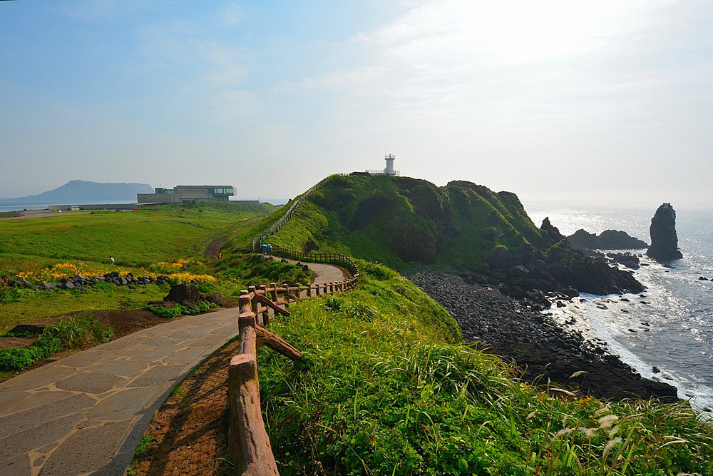

제주특별자치도 서귀포시 성산읍 고성리에 있는 해안 지형. 섭지란 재사(才士)가 많이 배출되는 지세란 뜻이며 코지는 곶을 뜻하는 제주어로, 본래는 섭지코지는 반도 끄트머리의 해안 절벽만을 가리킨다. 어쩌다 보니 반도 전체로 이름이 확장된 셈.고성리에서 돌출된 반도의 형태를 띠며 선녀바위 등 각종 기암괴석이 어우러져 멋진 풍경을 자랑한다. 원래도 제주도의 유명 관광지 중 하나였으나 2003년 드라마 올인의 대히트 후 전국구 관광지가 되었다. 원래 있던 올인 세트장은 태풍 매미로 망가져 2005년에 새로 지어진 테마박물관 겸 관광명소인 올인하우스가 있었으나 2014년 11월 리모델링을 하면서 컨텐츠를 완전히 바꿔 주변 풍광과 어울리지 않는 동화틱한 과자집 외형에 이름도 코지하우스로 바뀌었다. 끝부분에는 등대가 있으며, 일본인 건축가인 안도 다다오가 설계한 건축물 유민미술관(구 지니어스 로사이)과 글라스 하우스가 있다. 위치가 위치다보니 성산일출봉을 한 눈에 볼 수 있다. 다만 바람이 어마어마하게 부니 조심할 것. 전체적인 분위기가 거문도의 등대 중 무인 등대인 "녹산 등대"와 유사하다.
섭지코지
제주특별자치도 서귀포시 성산읍 섭지코지로 107
